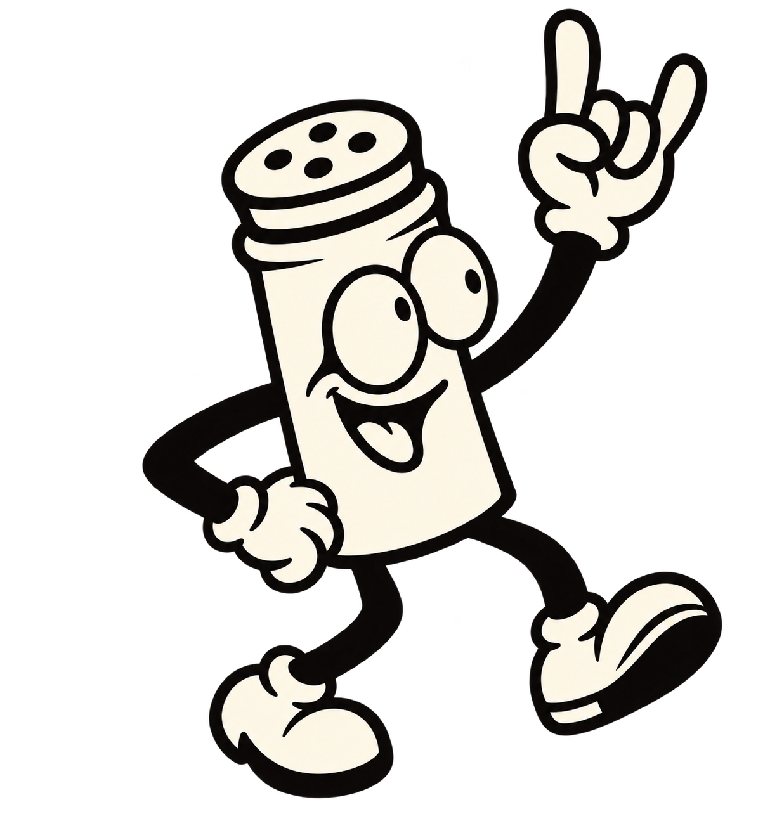

SPICE
LABORATORY
TERMÉSZETESEN. KARAKTERESEN.

✳
EGY CSIPET. TELJESEN MÁS VILÁG.
UNALMAS
KAJA
KIZÁRVA
FELFEDEZEM AZ ÍZEKET
↗
100% TERMÉSZETES ALAPANYAGOK
Ⅱ ANIMÁCIÓ SZÜNET
SPICE LABORATORY
FEJLÉCKONCEPCIÓ / 01